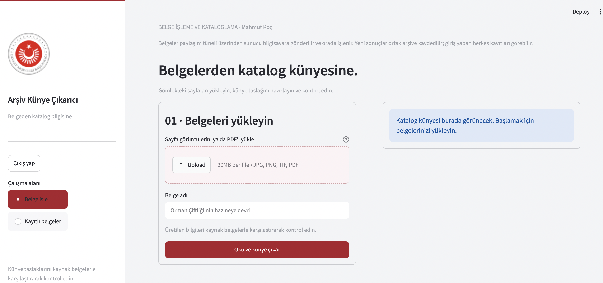
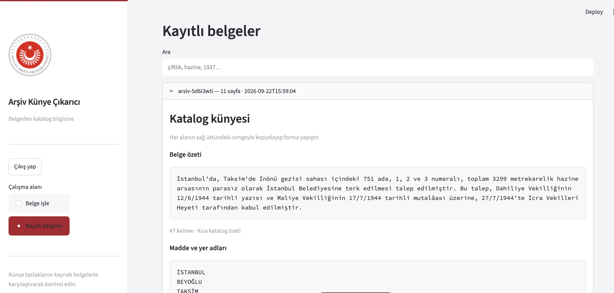

BELGE İŞLEME
Arşiv Künye Çıkarıcı
PDF ve belge görüntülerinden kısa özet, yer, şahıs ve kuruluş adları için katalog taslağı hazırlayan yardımcı uygulama.
Çıktılar kaynak belgeyle kontrol edilmelidir. Canlı uygulama yalnızca planlanan sunumlarda açılır. Bu sitede belge yüklenmez.
Kaynak kodunu incele